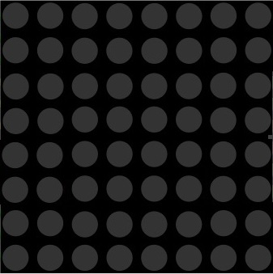
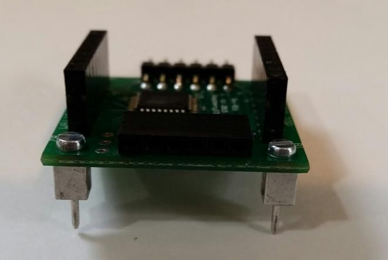
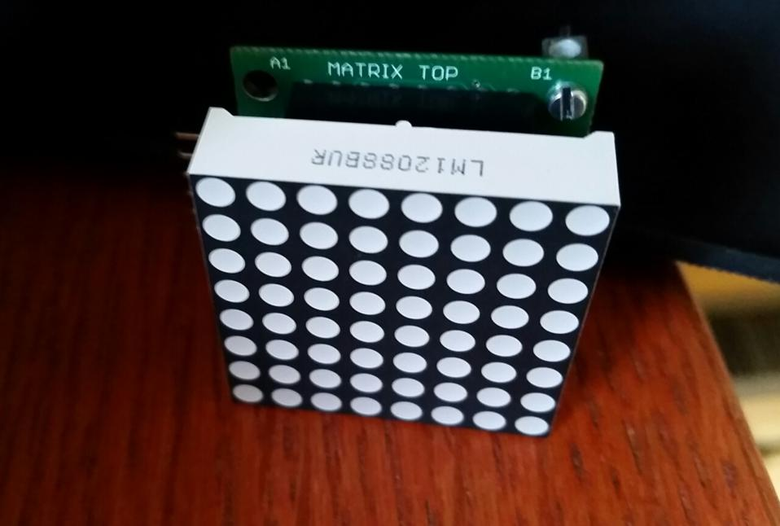
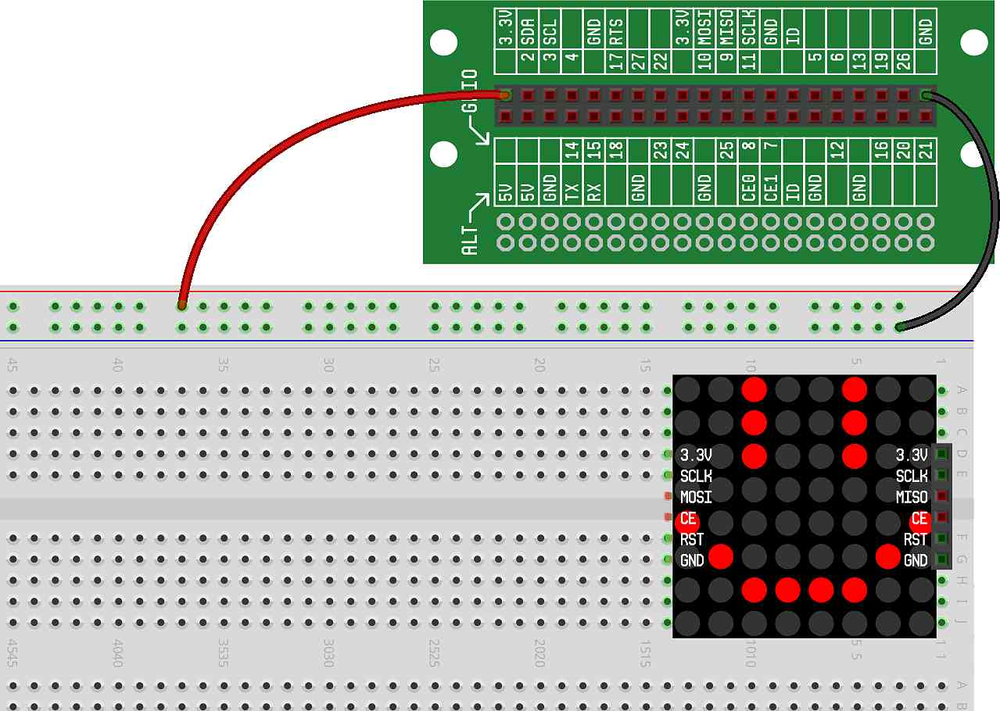
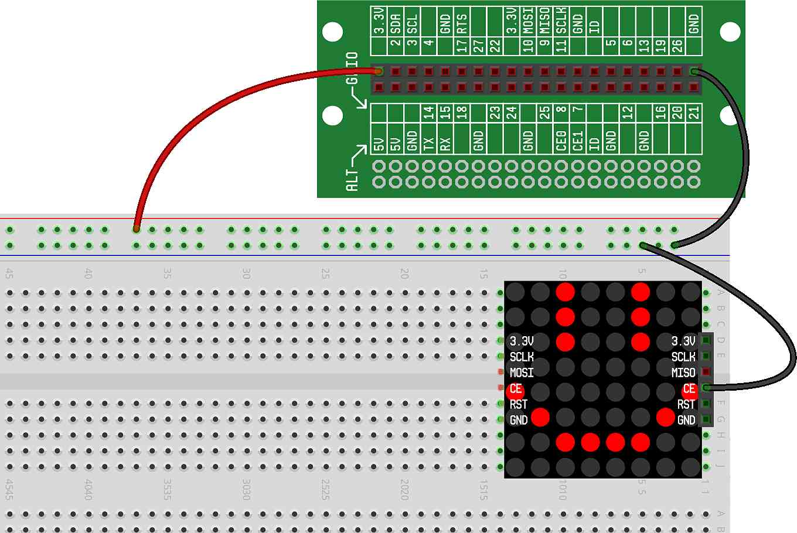
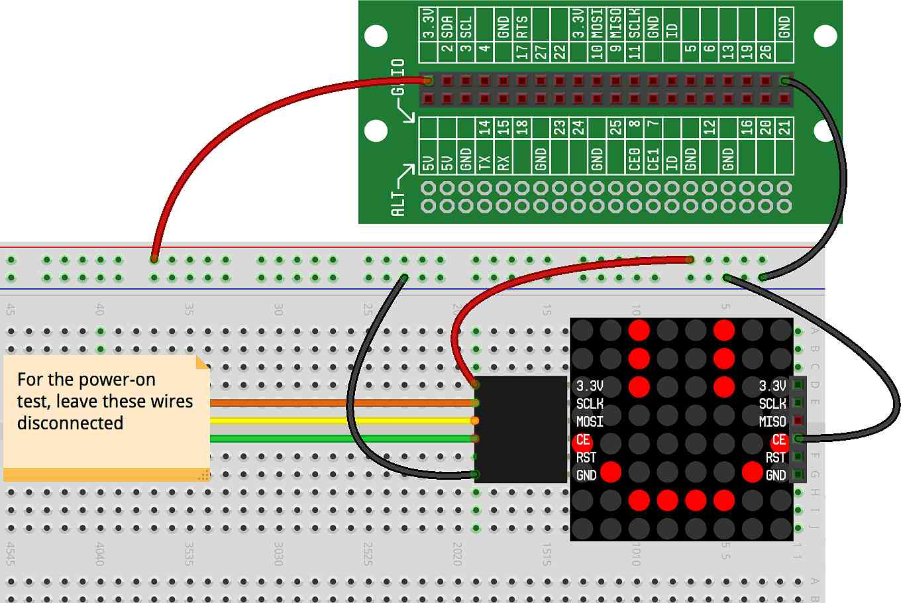

In this concept, we're going to introduce a new component that can be used for a variety of purposes, including building games. It's called an LED Matrix, and like the name implies, it is basically a small device that contains lots of little LEDs (64 of them, to be exact).
This is what an LED Matrix looks like:
Our LED Matrix is a small version of the large changing display signs that you often see as billboards, at sports stadiums, restaurants, and businesses. The idea is simple — if you can control one LED, then you can control many. And, if you can put a whole lot of LEDs in a small space and turn them on and off in a coordinated way, you can make the many LEDs together appear to work like a TV or computer monitor to display images, animations, and more.
The LED Matrix included with the CREATOR Kit is a single color matrix, where each LED in the matrix works just like the LEDs we used in previous projects. There is only one LED Matrix in the CREATOR Kit, but the LED Matrix is designed so that it can be chained together with more LED Matrixes to create larger displays (for example, if you are working in a classroom where there are other CREATOR Kits).
In your box of Ready Set STEM Cells is a bag labeled LED Matrix Ready Set STEM Cell. This bag contains all the parts that you'll need to build and program the LED Matrix. In that bag you should find the following:
LED Matrix: This actually consists of two parts that we've assembled for you — the green circuit board on the bottom and the LED display on the top. You can pull the display from the circuit board, but make sure you do so very carefully so that none of the pins bend or break.
LED Matrix Cable: This cable consists of five wires with connectors on each end. This is the cable that will be used to connect the LED Matrix to the breadboard.
Mounting Posts: These two small posts and screws will need to be attached to the LED Matrix to allow it to attach to the breadboard.
The LED Matrix comes with two small mounting posts and screws that are used to attach the LED Matrix to the breadboard. The mounting posts should be installed prior to using the LED Matrix. To install the mounting posts, follow these steps:
The LED Matrix consists of two parts, connected together by 16 pins (8 on each side). To install the mounting posts, you will need to pull the top part (the LED display) from the bottom part (the circuit board). This is done by gripping the edges of the LED display gently in one hand, gripping the edges of the circuit board gently in the other hand and carefully separating the display from the board. Try to apply equal pressure all around the display to avoid bending or breaking any pins.
Once the display is separated from the circuit board, set the display (the top piece with the 64 dots) aside.
On the circuit board corners are four holes, two labeled "A" and two labeled "B". You can attach the mounting posts either in the "A" holes or the "B" holes, but you will want to ensure that both mounting posts are attached to holes with the same letter (either both in "A" or both in "B").
Attach the mounting posts, as shown below:
You should be able to tighten the mounting post screws by hand but, if necessary, you can also use a small screwdriver to tighten the screws.
Once the mounting posts are secured and tightened, you'll need to re-attach the LED display to the circuit board. Holding the circuit board in one hand and the LED display in the other, carefully align the 16 pins on the LED display with the 16 holes on the circuit board. Once the pins and holes are aligned, gently press the LED display into the circuit board, applying equal pressure around the display to avoid breaking pins.
IMPORTANT: There is a specific orientation for the LED display to be mounted on the circuit board. The serial number of the LED display should be on the same side as the words "MATRIX TOP" on the circuit board, as shown in the picture below:
The LED Matrix will mount on the breadboard by pushing the mounting posts into the breadboard holes. Keep in mind that the LED Matrix doesn't connect to the breadboard electrically — meaning, it doesn't need to be attached to the breadboard to work. All of the signals going between the CREATOR Kit and the LED Matrix will be going over the LED Matrix cable, and not through the breadboard. The main reason to mount the LED Matrix to the breadboard is so that the LED Matrix is secured (not flopping around) while you're working with it.
Mount the LED Matrix somewhere near the top right of the breadboard, like this: 
The Power On Self Test is a built in sequence that the LED Matrix can go through to demonstrate that it is working. To use it, you'll first need to hook up a wire from the hole on the side of the LED Matrix labeled "CE" to ground, as shown (the wire will plug into the right side of the LED Matrix): 
Then, attach the the LED Matrix Cable, and plug in the power and ground wires, as shown: 
Assuming you've done that correctly, the LED Matrix should power on and go through a preprogrammed sequence:
A vertical bar will sweep across the display.
A horizontal bar will sweep across the display.
A pattern will show all 16 "colors" that the display can produce. Each color is a different shade of red.
A bar and some dots will briefly be displayed. This indicates the version of the LED Matrix.
A pulsating rectangle will be displayed, and will continue to animate until the CE wire is removed.
You can remove the wire connecting CE to ground — it's only used to test the LED Matrix and won't be needed for any of future projects.